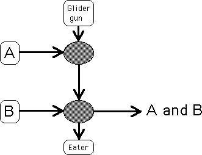

|  |
| Suppose both A and B have 1s in the current location. |
| The glider in the A stream kills the glider in the glider gun stream, so the glider gun stream transmits a 0 to B. |
| The glider in the B stream passes through the hole in the glider gun stream, and contributes a 1 to the current location of A and B. |
| That is, if A and B both are 1, so is A and B. |
Return to the and operation.